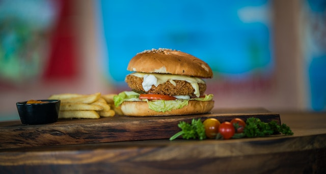

Chicken Burger

A chicken burger is a burger that typically consists of boneless, skinless chicken breast or thigh served between slices of bread, on a bun, or on a roll.
Ingredients
- cooking spray
- 1 medium onion, chopped
- 2 teaspoons minced garlic
- 1 medium red bell pepper, chopped
- 1 medium tomato, seeded and chopped
- 1 cup fresh sliced mushrooms
- 2 pounds ground chicken
- ½ cup fresh bread crumbs
- 1 large egg
- 1 tablespoon seafood seasoning
- kosher salt and ground black pepper to taste
Steps
- Lightly spray a skillet with cooking spray and heat over medium heat. Add onion and sauté until translucent, about 5 minutes. Add garlic and cook until fragrant, about 30 seconds. Add carrots, bell pepper, tomato, and mushrooms; cook and stir until tender, 5 to 7 minutes. Remove from the heat and let cool completely, about 20 minutes.
- Preheat an outdoor grill for medium heat and lightly oil the grate.
- Mix ground chicken and cooled vegetables together in a large bowl. Add bread crumbs, egg, seafood seasoning, salt, and pepper; mix until well combined. Form mixture into eight patties.
- Cook on the preheated grill until no longer pink in the center and the juices run clear, 5 to 6 minutes per side. An instant-read thermometer inserted into the center should read at least 165 degrees F (74 degrees C).